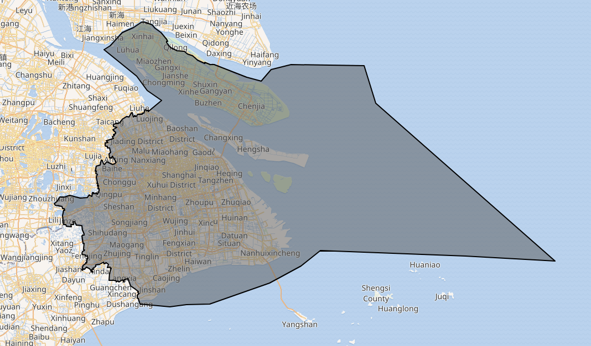
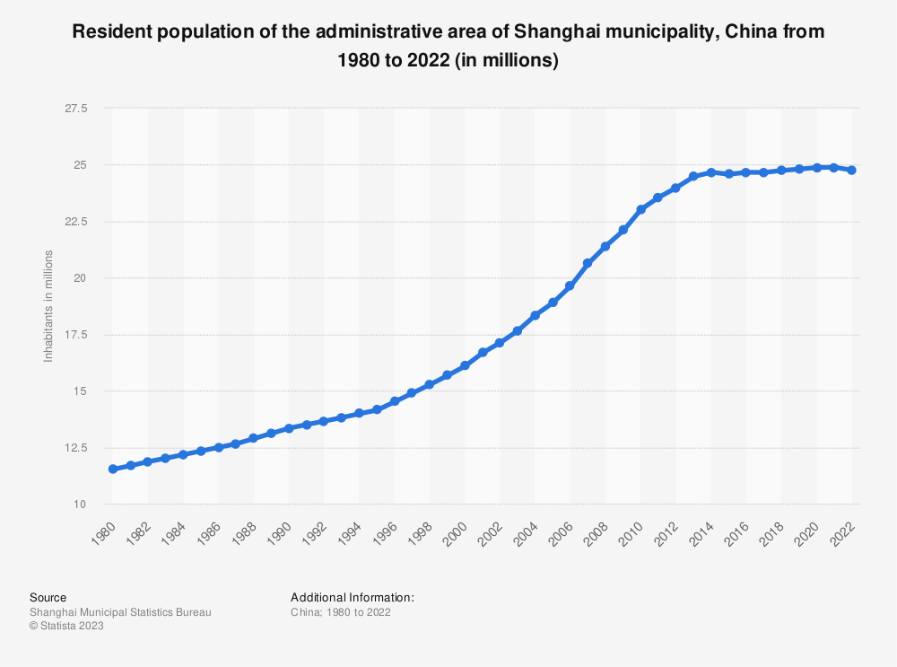
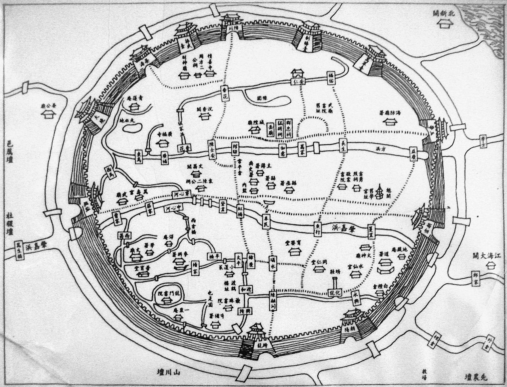
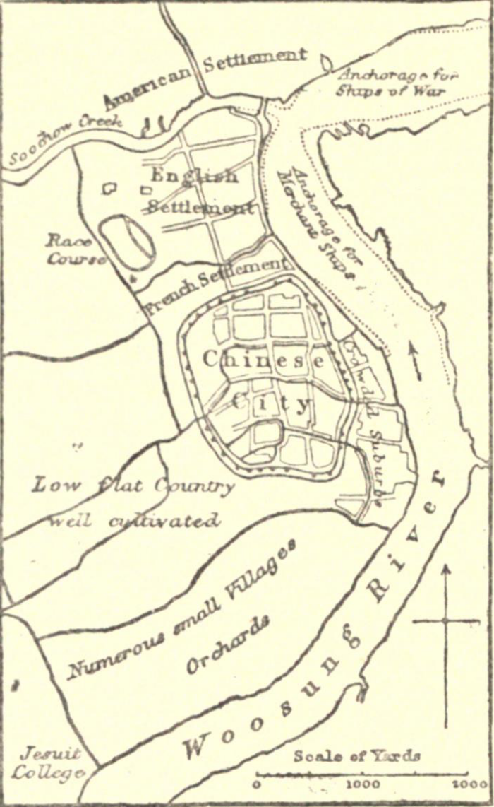
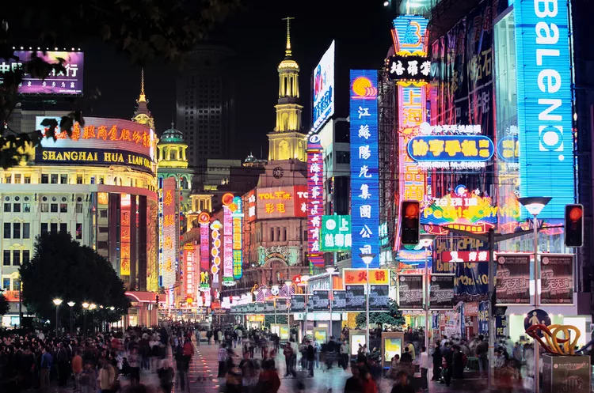
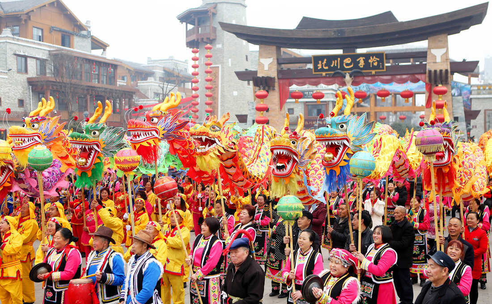

ShanghaiGo back Overview  Shanghai is one of the four direct-administered municipalities of the People's Republic
of China. The city is located on the southern estuary of the Yangtze River, with the Huangpu River flowing through it. Population  As China’s cities become increasingly urbanized, the demographic of this megacity has
also changed considerably over the years, with more and more Chinese locals and foreigners opting to dwell in Shanghai for work and cultural opportunities.
A huge proportion of residents in the city originate from other regions in China. Over 39 percent of the city’s residents are long-term migrants and Shanghai host’s
many foreigners and expats. By 2035, over 34 million people are projected to call Shanghai home. To reduce this number, the Chinese Government implemented population
controls for the city in 2017 which aimed to limit the population living in the administrative
area of Shanghai municipality to just around 25 million people in 2035. History  During the Ming dynasty (1368–1644) roughly 70 percent of the cultivated acreage around Shanghai was given to the production of cotton to feed the city’s cotton- and
silk-spinning industry. By the middle of the 18th century there were more than 20,000 persons employed as cotton spinners.After the 1850s the predominantly agricultural
focus of the economy was quickly transformed. At this time the city became the major Chinese base for commercial imperialism by nations of the West. Following a
humiliating defeat by Great Britain in the first Opium War (1839–42), the Chinese surrendered Shanghai and signed the Treaty of Nanjing, which opened the city to
unrestricted foreign trade. The British, French, and Americans took possession of designated areas in the city within which they were granted special rights and
privileges, and the Japanese received a concession in 1895 under the terms of the Treaty of Shimonoseki.The opening of Shanghai to foreign business immediately led
to the establishment of major European banks and multipurpose commercial houses.
History 
The city’s prospects as a leading centre of foreign trade were further enhanced when
Canton (present-day Guangzhou), a rival port in the southeastern coastal province of Guangdong, was cut off from its hinterland by the Taiping Rebellion (1850–64).
Impelled by this potential threat to the uninterrupted expansion of their commercial operations in China, the British obtained rights of navigation on the Yangtze
River (Chang Jiang) in 1857. As the natural outlet for the vast hinterland of the lower Yangtze, Shanghai rapidly grew to become China’s leading port and by 1860
accounted for about 25 percent of the total shipping tonnage entering and departing the country. Shanghai did not show promise of becoming a major industrial centre,
however, until the 1890s. Except for the Jiangnan Arsenal organized by the Qing dynasty (1644–1911/12) in the early 1860s, most industrial enterprises were small-scale
offshoots of the larger foreign trading houses. As the flow of foreign capital steadily increased after the first Sino-Japanese War (1894–95), light industries were
established within the foreign concessions, which took advantage of Shanghai’s ample and cheap labour supply, local raw materials, and inexpensive power. Travel  Shanghai is known for hordes of bicycles and scooters zooming by on the streets. It's an
amazing sight to see, but pedestrians should remember to be extra careful. It's great to post photos and Google everything you see while on vacation, but remember some
websites are blocked in China, including Facebook. But a digital detox isn't necessarily a bad thing and less social media just means more time for being in the moment.
Shanghai is a very safe city, especially compared to other cities of comparable size.
Travel 
One of the coolest times to visit Shanghai is around Chinese New Year, which tends to fall around late January or February. The city comes alive with vibrant decorations,
special food, and an amazing lantern display. Cherry blossom fans should head to the city in March to watch the blooms. There are thousands of cherry blossoms and dozens
of varieties to see. In September or early October, tourists can feast on traditional mooncakes (typically filled with red bean paste or lotus seed paste) for the
Mid-Autumn Festival.